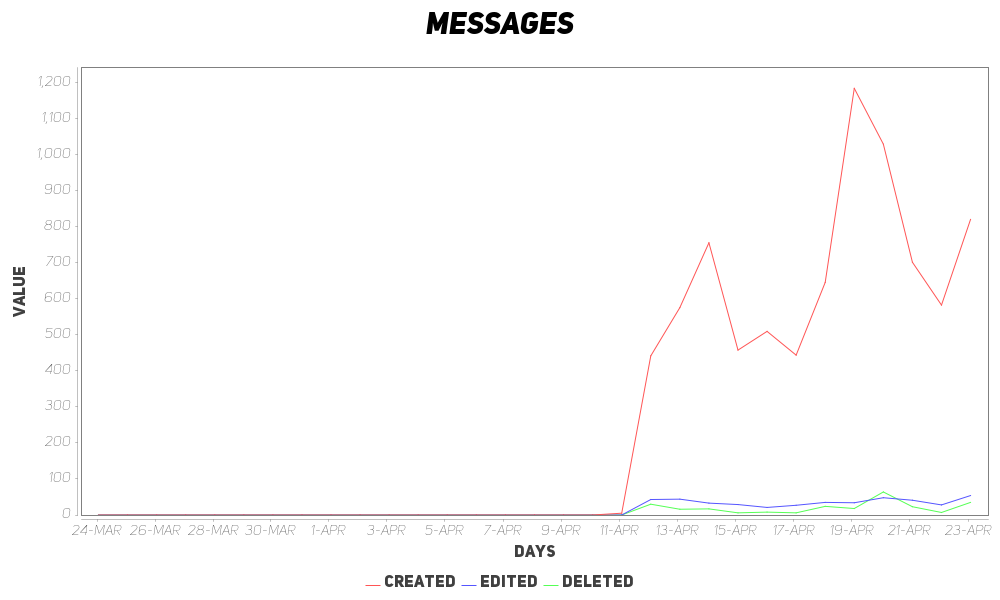

Intelligent Minecart Routing
While experimenting with sending data via chest-minecarts in Minecraft, I discovered a method that can be used to route traffic through a network of binary switches. This allows for the creation of large networks of rails that can be traversed entirely automatically, by sending a data cart ahead of a player's own cart. The data cart contains one bit of data for each switch it must pass on its journey.
Watch the tutorial to learn how to build this in your world!
Simply Scheduled
Runnable job = () -> System.out.println("Doing some work...");
Schedule schedule = new RepeatingSchedule(ChronoUnit.SECONDS, 5);
Scheduler scheduler = new BasicScheduler();
scheduler.add(new Task(job, schedule));
scheduler.start();Inspired by scheduling systems like Quartz, I came up with my own minimalistic scheduling system, whose behavior is loosely based on that of CRON tasks. This scheduling API offers an extremely simple and yet extensible interface for scheduling tasks to run consistently at specific times or in certain intervals.
Entity-Relation Mapping Editor
During my time as a teaching assistant for my university's Introduction to Information Systems course, I developed an application that would specifically help students generate entity-relation mappings, as part of their journey from entity-relational models to a full relational database schema.
This application provides an interface where a relation diagram can be created, with attributes that may reference the attributes of other relations. Diagrams can easily be exported to images for use in homeworks or for sharing with those who don't have the program, and the diagram files can be saved and loaded as well.
Minecraft Printing Press
A simple Java-Swing application that uses native hooks to automate the process of formatting and pasting large texts into Minecraft's written books.
Insights - A Discord Bot
As part of the Java Discord server, I created a bot which tracks user activity metrics daily, and produces some nice visualizations of the results. By using some clever caching techniques, the bot can handle massive amounts of activity with ease, performing only a fixed number of database queries once at midnight for each guild it participates in, and in normal operation it's rare to see its memory usage exceed 200MB.
Loading System for Immersive Railroading
The LoadMaster™ is a system I developed to automatically load and unload large trains from the Immersive Railroading mod for Minecraft. This system uses a set of distributed loader/unloader modules that are orchestrated by a master server. The master server also serves as the user's point of contact, since it provides a nice GUI from which the individual modules can be controlled one-by-one, or as a group.
To install this system in your world, you should first watch the tutorial that covers building the infrastructure. Then you can simply install the script to both the master controller and the loader modules using pastebin run LgJr66gm.